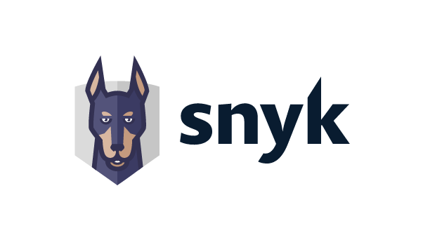
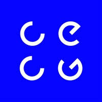
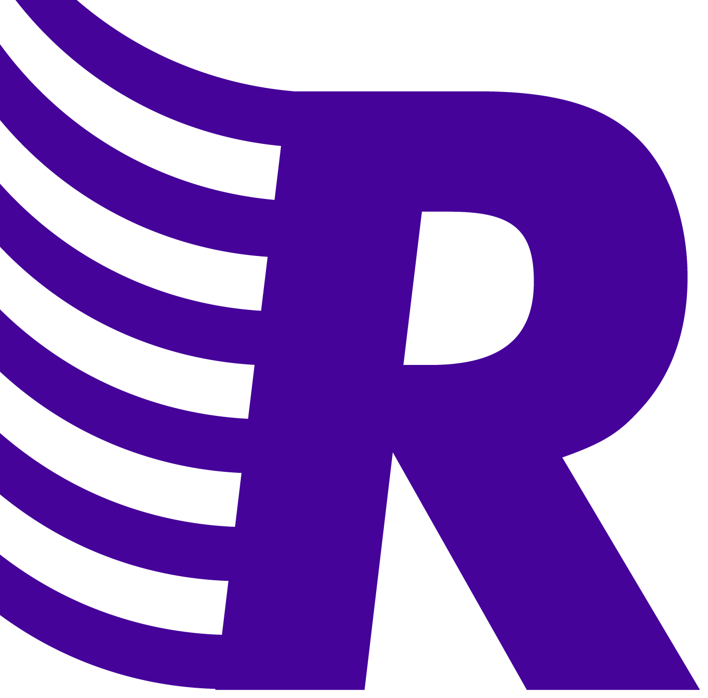
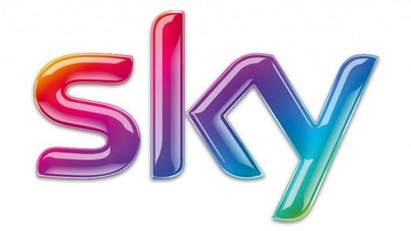
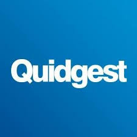
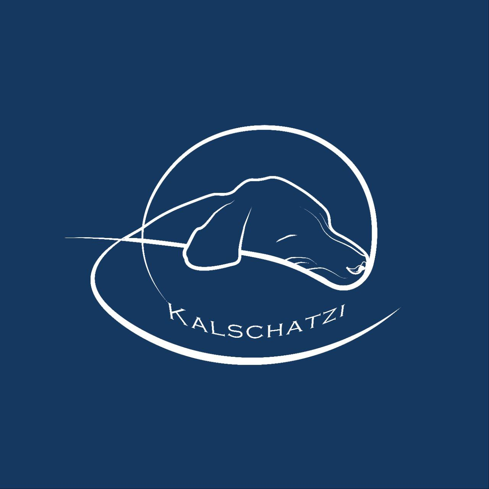

Tiago Alves
[tiago@kalschatzi.com] •
[+351 915718324] • LinkedIn • GitHub • Website
🧑💻 Summary
Passionate about learning and tackling complex challenges. I
specialize in leading the development and design of Developer Platforms
and end-to-end applications. I’ve worked across both startups and large
enterprises like Sky plc, always focused on delivering robust and secure
solutions. I’m also an active mentor and teacher.
🛠️ Key Technical Skills
Languages: Java, Groovy, Golang, Flutter, Rust,
Python
DevOps: Docker, Kubernetes, k3s, Nomad, GitHub
Actions, Jenkins, Terraform, ArgoCD
Cloud: AWS, GCP
Networking & Self-Hosting: Tailscale, Cloudflare
Tunnels, NFS
Databases: PostgreSQL, Cassandra, Redis
Observability: ELK, Prometheus, Grafana, Datadog
Other: Apache Kafka, Gradle, Cilium
💼 Experience

• Snyk • Staff Software Engineer
November 2025 – Present
- Leading the design and development of an AI-powered penetration
testing service for Snyk’s platform.
- Architected a two-component system (API server + async worker) for
orchestrating autonomous security assessments of web applications.
- Built a hardened sandbox execution environment using bubblewrap,
seccomp, and network egress policies to safely run AI agents.
- Implemented async job processing via Redis Streams with idempotent
ingestion and concurrency-safe writes.
- Tech stack: Go, Rust, Python, PostgreSQL, Redis, Docker, Kubernetes,
Envoy

• CECG • Lead Software Engineer
November 2021 – October 2025
- Led the development of Internal Developer Platforms for different
clients.
- Strong focus on security; collaborated with the security team to
design platform features.
- Built an out-of-the-box, fully containerized Developer Platform
deployable in days, saving years of manual effort.
- Redesigned and helped rebuild the CMS solution for a major media
company while improving department workflows.
• Toptal • Lead Software Engineer
February 2018 – January 2022
Freelance software engineer through Toptal. Worked across multiple
client projects:
Client: Messaging and voicemail management mobile
app
- Designed and implemented UI based on mockups.
- Integrated features such as a messaging service and setup bot.
- Tech stack: Flutter, Dialogflow, Firebase Cloud Messaging, Google
Charts
Client: Aviation maintenance application
- Led mobile development and managed a team of 4 engineers.
- Delivered full application based on design specs.
- Tech stack: Node.js, Flutter, GCP, Serverless
Client: Reinsurance company
- Backend engineer across legacy and new systems.
- Co-designed a modern service-oriented architecture.
- Tech stack: Nest.js, Serverless, AWS, Java, Spring Boot, PostgreSQL,
TypeORM

• Reachdesk • Senior Software Engineer
January 2021 – October 2021
- Fourth engineer at the company; helped scale to 40+ people.
- Focused on reliability and resilience of the platform.
- Built comprehensive test coverage (functional, integration,
load).

• Sky PLC • Senior Software Engineer
January 2016 – December 2020
- Built scalable and highly available REST APIs.
- Migrated legacy databases using custom tools (Pentaho).
- Created robust test suites across multiple test levels.
- Maintained CI/CD pipelines on Kubernetes for microservices.
- Tuned database and API performance; implemented zero-downtime
optimizations.
- Built observability dashboards using Kibana and Grafana.
- Led and improved an internal Kubernetes-based PaaS.
• Airnav Systems LLC • Senior Software Engineer
February 2012 – December 2015
- Developed and maintained all RadarBox24 applications using multiple
APIs.
- Contributed to the development of the radarbox24.com website.
- Built RESTful services with Redis to optimize data access.
- Implemented a high-throughput Java data processing server.
- Developed Android apps for flight tracking.
- Created a Maven-based data processor feeding data to Redis for
downstream apps.

• Quidgest • Software Developer
May 2011 – August 2011
- Implemented PDF report generation.
- Contributed to the development of the code generator tool.
- Refactored and maintained old applications.
🧾 Online Writing / Public
Contributions
📂 Projects
Market Analyser – Self-hosted quantitative trading
research platform
- End-to-end Go system for stock market research, backtesting, and
paper trading via Interactive Brokers.
- Self-hosted on personal infrastructure: PostgreSQL, Grafana
dashboards, IB Gateway containers, Jenkins CI/CD.
- Deployed with Docker Compose on NFS-backed storage; automated
pipeline (lint, test, deploy, regression replay).
- Walk-forward validation, Monte Carlo confidence intervals, and an
8-gate promotion framework before any strategy goes live.
- Tech stack: Go, PostgreSQL, Docker, Jenkins, Grafana, NFS

• Kalschatzi’s Learning Platform – GitHub | Site
- Platform and content for a mentorship project supporting junior
engineers.
- Currently mentoring 4 students.
🎓 Education
- Universidade Nova de Lisboa - Master’s in Computer
Science — 2011–2016
- Wrocław University of Science and Technology - Bachelor in
Computer Science (ERASMUS program) - 2013-2014